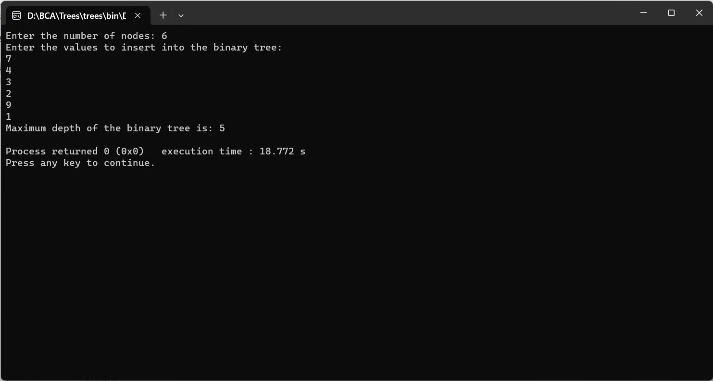

FIND THE MAXIMUM DEPTH OF BINARY TREE
#include
#include
struct Node {
int data;
struct Node* left;
struct Node* right;
};
struct Node* createNode(int value) {
struct Node* newNode = (struct Node*)malloc(sizeof(struct Node));
newNode->data = value;
newNode->left = newNode->right = NULL;
return newNode;
}
struct Node* insertNode(struct Node* root, int value) {
if (root == NULL) {
return createNode(value);
}
if (value < root->data) {
root->left = insertNode(root->left, value);
} else if (value > root->data) {
root->right = insertNode(root->right, value);
}
return root;
}
int maxDepth(struct Node* root) {
if (root == NULL) {
return 0;
}
int leftDepth = maxDepth(root->left);
int rightDepth = maxDepth(root->right);
return (leftDepth > rightDepth) ? leftDepth + 1 : rightDepth + 1;
}
int main() {
int size, value;
printf("Enter the number of nodes: ");
scanf("%d", &size);
printf("Enter the values to insert into the binary tree:\n");
scanf("%d", &value);
struct Node* root = createNode(value);
for (int i = 1; i < size; i++) {
scanf("%d", &value);
insertNode(root, value);
}
int depth = maxDepth(root);
printf("Maximum depth of the binary tree is: %d\n", depth);
return 0;
}
